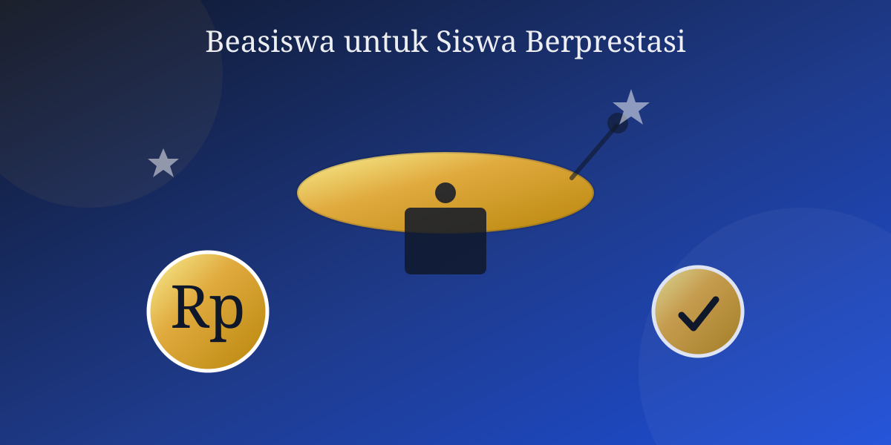

SMA Nusantara Unggul bekerja sama dengan yayasan pendidikan mitra meluncurkan Program Beasiswa Prestasi Siswa 2025. Program ini ditujukan bagi siswa berprestasi akademik maupun non-akademik yang membutuhkan dukungan biaya pendidikan.
Kategori Beasiswa
- Beasiswa Prestasi Akademik (peringkat 10 besar paralel)
- Beasiswa Prestasi Non-Akademik (juara kompetisi olahraga, seni, dan sains tingkat kota/provinsi/nasional)
- Beasiswa Bantuan Pendidikan bagi siswa dari keluarga kurang mampu
Syarat dan Mekanisme Pendaftaran
Pendaftar wajib melampirkan fotokopi rapor dua semester terakhir, sertifikat prestasi (jika ada), serta surat keterangan dari sekolah. Bagi kategori bantuan pendidikan, calon penerima juga perlu menyertakan surat keterangan tidak mampu dari kelurahan setempat.
Jadwal Pendaftaran
Pendaftaran dibuka mulai 5 Juni hingga 5 Juli 2025. Berkas dapat diserahkan langsung ke ruang Tata Usaha pada jam kerja sekolah. Pengumuman penerima beasiswa akan disampaikan melalui wali kelas dan papan pengumuman sekolah pada minggu kedua bulan Juli 2025.
Sekolah mengimbau seluruh siswa yang memenuhi kriteria untuk segera melengkapi berkas pendaftaran agar tidak melewatkan kesempatan berharga ini.